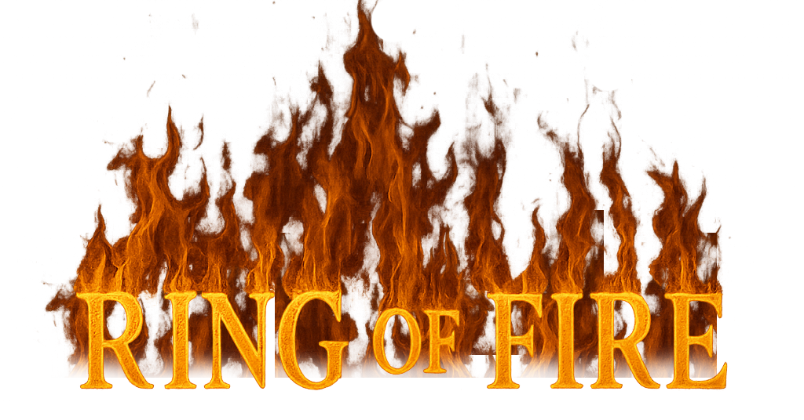

Regler
- 2: Is you – välj någon som måste dricka.
- 3: Is me – du själv dricker.
- 4: Is whore – alla tjejer dricker.
- 5: Is thumbmaster – sätt tummen på bordet, sist dricker.
- 6: Is dicks – alla killar dricker.
- 7: Is heaven – peka mot himmeln, sist dricker.
- 8: Is mate – välj en kompis som dricker varje gång du dricker.
- 9: Is rhyme – börja ett rimm, förloraren dricker.
- 10: Is category – välj kategori, förloraren dricker.
- Knekt: Is rule – hitta på en ny regel som gäller resten av spelet.
- Drottning: Is question master – om någon svarar på din fråga måste de dricka.
- Kung: Häll upp i muggen, den som drar sista kungen dricker allt.
- Ess: "Waterfall" – alla börjar dricka, ingen får sluta förrän personen före dem gör det.